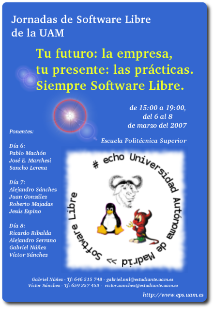

This work is licensed
under a Creative
Commons Attribution-ShareAlike 2.5 Spain License
This work is licensed
under a Creative
Commons Attribution-ShareAlike 2.5 Spain License
|
"Hardware Libre: conociendo las tripas”. Jornadas de Software Libre en la UAM. Escuela Politécnica Superior. Madrid. Marzo 2007 |
|
 |
Título de la charla: ”Hardware Libre: Conociendo las tripas”
Duración: 45 minutos
Evento: Jornadas de Software Libre de la UAM.
Organizadores: Gabriel Núñez y Víctor Sánchez
Lugar: Escuela Politécnica Superior
Fecha: 7 de Marzo de 2007
Ponente:
En esta charla se introduce el concepto de hardware libre y se explica en qué se diferencia del software libre. Debido a la existencia de herramientas propietarias para el diseño hardware, la definición que utilizamos de hardware libre permite su uso, considerándose libre cualquier diseño al que el autor conceda determinadas libertades, independientemente del software de diseño empleado. Sin embargo, este software impone restricciones a la compartición, clasificándose el hardware libre en tres niveles.
A continuación se muestran dos de las herramientas empleadas para diseñar, ambas disponibles para Linux. Una es el Eagle, que es software propietario y la otra es Kicad, una reciente aplicación profesional publicada bajo licencia GPL.
Por último se presenta la tarjeta Skypic, que es hardware libre de nivel 1, diseñada con la herramienta eagle. Se enumeran todas sus aplicaciones y se hace una demostración de uso para una aplicación friki: encender un flexo desde el ordenador.
Se permite la copia, distribución y modificación de este documento siempre y cuando se siga manteniendo con la misma licencia
|
|
|
Descarga de la presentación |
|
hardware-libre-uam-mar-2007.odp (2.1MB) |
Presentación para OpenOffice 2.0 |
|
hardware-libre-uam-mar-2007.pdf (2.8MB) |
Presentación en PDF |
Artículo: “Hardware libre: Clasificación y desarrollo de hardware reconfigurable en entornos GNU/Linux”
Artículo “Hardware libre: La tarjeta skypic, una Entrenadora para Microcontroladores PIC”
OPENCORES: Comunidad de hardware reconfigurable
A Gabriel Núñez y Víctor Sánchez por organizar las jornadas e invitarme a participar en ellas. ¡Muchas gracias!